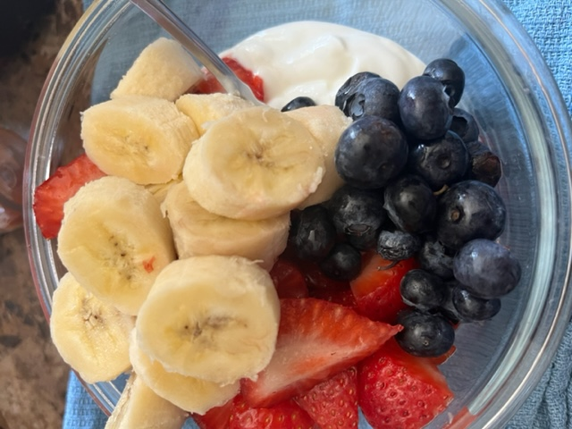

Back to Homepage
Back to Recipes
Yogurt and Fruit

Description:
Pictured above is my favorite snack, hands down! It's delicious, easily digestible and is packing some serious gains (protein).
Ingredients:
- 1 - 1.5 cups of plain nonfat Greek yogurt
- 1 medium sized banana (sliced)
- 8 medium sized strawberries
Steps:
- Let's first take our serving(s) of plain nonfat Greek yogurt in a small bowl
- Next, let's wash our strawberries and blueberries (if applicable) and slice our strawberries in half while also removing the stem
- Then, we will slice our banana and add it do our bowl of yogurt
- Finally, we will add the rest of our berries into our bowl and enjoy!